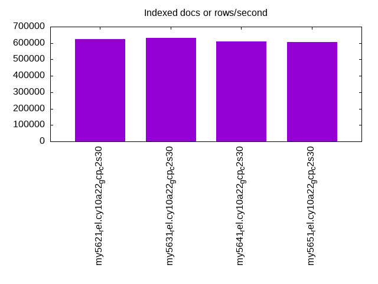
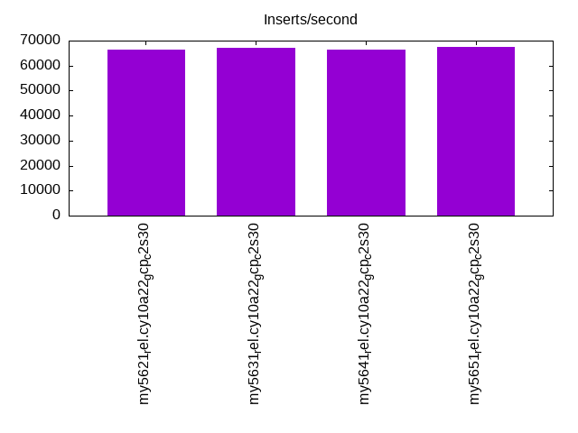
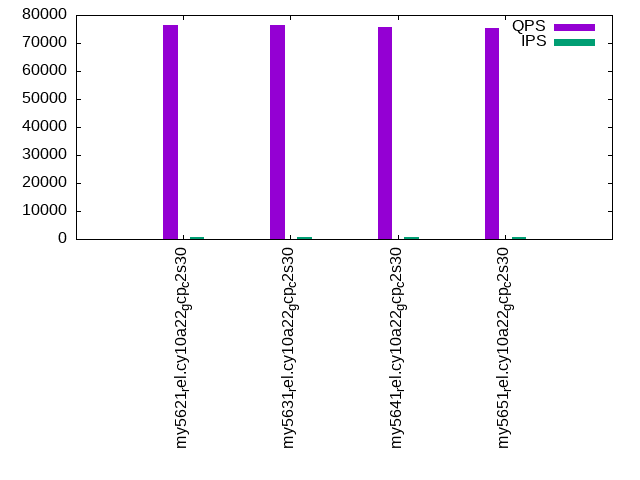
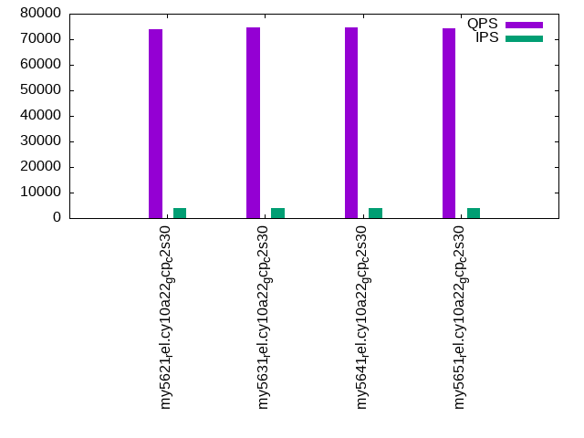
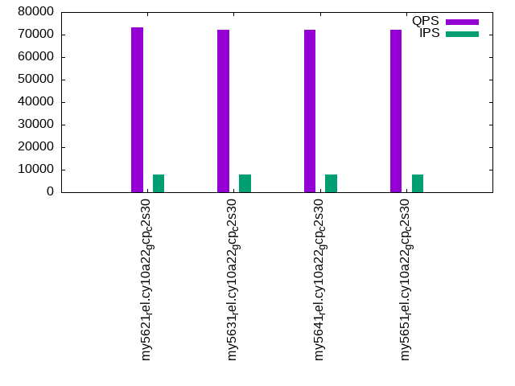

This is a report for the insert benchmark with 160M docs and 8 client(s). It is generated by scripts (bash, awk, sed) and Tufte might not be impressed. An overview of the insert benchmark is here and a short update is here. Below, by DBMS, I mean DBMS+version.config. An example is my8020.c10b40 where my means MySQL, 8020 is version 8.0.20 and c10b40 is the name for the configuration file.
The test server is a c2-standard-30 from GCP with 15 cores, hyperthreads disabled, 120G RAM, XFS + SW RAID 0 on 4 NVMe devices (1.5TB). The benchmark was run with 8 client and there were 1 or 3 connections per client (1 for queries or inserts without rate limits, 1+1 for rate limited inserts+deletes). There are 8 tables, client per table. It loads 20M rows per table without secondary indexes, creates secondary indexes, then inserts 100M rows with a delete per insert to avoid growing the table. It then does 3 read+write tests for 1800s each that do queries as fast as possible with 100, 500 and then 1000 inserts/second/client concurrent with the queries and 1000 deletes/second to avoid growing the table. The database is larger than memory.
The tested DBMS are:
The numbers are inserts/s for l.i0 and l.i1, indexed docs (or rows) /s for l.x and queries/s for q100, q500, q1000. The values are the average rate over the entire test for inserts (IPS) and queries (QPS). The range of values for IPS and QPS is split into 3 parts: bottom 25%, middle 50%, top 25%. Values in the bottom 25% have a red background, values in the top 25% have a green background and values in the middle have no color. A gray background is used for values that can be ignored because the DBMS did not sustain the target insert rate. Red backgrounds are not used when the minimum value is within 80% of the max value.
| dbms | l.i0 | l.x | l.i1 | q100.1 | q500.1 | q1000.1 |
|---|---|---|---|---|---|---|
| my5621_rel.cy10a22_gcp_c2s30 | 428954 | 622957 | 66274 | 76348 | 73983 | 73199 |
| my5631_rel.cy10a22_gcp_c2s30 | 430108 | 630315 | 67148 | 76389 | 74530 | 72235 |
| my5641_rel.cy10a22_gcp_c2s30 | 425532 | 611069 | 66296 | 75727 | 74560 | 72282 |
| my5651_rel.cy10a22_gcp_c2s30 | 428954 | 606439 | 67380 | 75336 | 74238 | 72310 |
This table has relative throughput, throughput for the DBMS relative to the DBMS in the first line, using the absolute throughput from the previous table. Values less than 0.95 have a yellow background. Values greater than 1.05 have a blue background.
| dbms | l.i0 | l.x | l.i1 | q100.1 | q500.1 | q1000.1 |
|---|---|---|---|---|---|---|
| my5621_rel.cy10a22_gcp_c2s30 | 1.00 | 1.00 | 1.00 | 1.00 | 1.00 | 1.00 |
| my5631_rel.cy10a22_gcp_c2s30 | 1.00 | 1.01 | 1.01 | 1.00 | 1.01 | 0.99 |
| my5641_rel.cy10a22_gcp_c2s30 | 0.99 | 0.98 | 1.00 | 0.99 | 1.01 | 0.99 |
| my5651_rel.cy10a22_gcp_c2s30 | 1.00 | 0.97 | 1.02 | 0.99 | 1.00 | 0.99 |
This lists the average rate of inserts/s for the tests that do inserts concurrent with queries. For such tests the query rate is listed in the table above. The read+write tests are setup so that the insert rate should match the target rate every second. Cells that are not at least 95% of the target have a red background to indicate a failure to satisfy the target.
| dbms | q100.1 | q500.1 | q1000.1 |
|---|---|---|---|
| my5621_rel.cy10a22_gcp_c2s30 | 796 | 3978 | 7960 |
| my5631_rel.cy10a22_gcp_c2s30 | 796 | 3978 | 7960 |
| my5641_rel.cy10a22_gcp_c2s30 | 796 | 3978 | 7960 |
| my5651_rel.cy10a22_gcp_c2s30 | 796 | 3980 | 7960 |
| target | 800 | 4000 | 8000 |
l.i0: load without secondary indexes. Graphs for performance per 1-second interval are here.
Average throughput:
Insert response time histogram: each cell has the percentage of responses that take <= the time in the header and max is the max response time in seconds. For the max column values in the top 25% of the range have a red background and in the bottom 25% of the range have a green background. The red background is not used when the min value is within 80% of the max value.
| dbms | 256us | 1ms | 4ms | 16ms | 64ms | 256ms | 1s | 4s | 16s | gt | max |
|---|---|---|---|---|---|---|---|---|---|---|---|
| my5621_rel.cy10a22_gcp_c2s30 | 2.315 | 97.432 | 0.074 | 0.165 | 0.014 | 0.198 | |||||
| my5631_rel.cy10a22_gcp_c2s30 | 2.362 | 97.399 | 0.062 | 0.163 | 0.014 | 0.205 | |||||
| my5641_rel.cy10a22_gcp_c2s30 | 2.315 | 97.440 | 0.068 | 0.162 | 0.014 | 0.219 | |||||
| my5651_rel.cy10a22_gcp_c2s30 | 2.439 | 97.324 | 0.061 | 0.161 | 0.014 | 0.201 |
Performance metrics for the DBMS listed above. Some are normalized by throughput, others are not. Legend for results is here.
ips qps rps rmbps wps wmbps rpq rkbpq wpi wkbpi csps cpups cspq cpupq dbgb1 dbgb2 rss maxop p50 p99 tag 428954 0 3372 13.2 539.3 76.0 0.008 0.031 0.001 0.181 88045 43.1 0.205 15 10.6 139.1 15.6 0.198 55241 44053 160m.my5621_rel.cy10a22_gcp_c2s30 430108 0 3398 13.3 574.1 77.2 0.008 0.032 0.001 0.184 87997 43.4 0.205 15 10.6 139.1 15.7 0.205 55540 44752 160m.my5631_rel.cy10a22_gcp_c2s30 425532 0 3352 13.1 567.9 76.6 0.008 0.032 0.001 0.184 87125 43.3 0.205 15 10.6 139.1 15.5 0.219 54559 44465 160m.my5641_rel.cy10a22_gcp_c2s30 428954 0 3378 13.2 561.5 76.9 0.008 0.031 0.001 0.184 87525 44.2 0.204 15 10.6 139.1 15.6 0.201 55156 44752 160m.my5651_rel.cy10a22_gcp_c2s30
l.x: create secondary indexes.
Average throughput:
Performance metrics for the DBMS listed above. Some are normalized by throughput, others are not. Legend for results is here.
ips qps rps rmbps wps wmbps rpq rkbpq wpi wkbpi csps cpups cspq cpupq dbgb1 dbgb2 rss maxop p50 p99 tag 622957 0 289 1.1 7905.0 646.7 0.000 0.002 0.013 1.063 18331 38.3 0.029 9 21.7 150.2 26.5 0.001 NA NA 160m.my5621_rel.cy10a22_gcp_c2s30 630315 0 321 1.3 8194.9 661.7 0.001 0.002 0.013 1.075 19853 38.7 0.031 9 21.7 150.2 26.6 0.001 NA NA 160m.my5631_rel.cy10a22_gcp_c2s30 611069 0 312 1.2 7959.2 639.6 0.001 0.002 0.013 1.072 19410 38.5 0.032 9 21.7 150.2 26.2 0.001 NA NA 160m.my5641_rel.cy10a22_gcp_c2s30 606439 0 355 1.4 8268.2 639.4 0.001 0.002 0.014 1.080 21578 39.0 0.036 10 21.7 150.2 26.0 0.002 NA NA 160m.my5651_rel.cy10a22_gcp_c2s30
l.i1: continue load after secondary indexes created. Graphs for performance per 1-second interval are here.
Average throughput:
Insert response time histogram: each cell has the percentage of responses that take <= the time in the header and max is the max response time in seconds. For the max column values in the top 25% of the range have a red background and in the bottom 25% of the range have a green background. The red background is not used when the min value is within 80% of the max value.
| dbms | 256us | 1ms | 4ms | 16ms | 64ms | 256ms | 1s | 4s | 16s | gt | max |
|---|---|---|---|---|---|---|---|---|---|---|---|
| my5621_rel.cy10a22_gcp_c2s30 | nonzero | 21.590 | 77.546 | 0.667 | 0.045 | 0.152 | 0.362 | ||||
| my5631_rel.cy10a22_gcp_c2s30 | 22.200 | 76.963 | 0.658 | 0.045 | 0.135 | 0.338 | |||||
| my5641_rel.cy10a22_gcp_c2s30 | 21.307 | 77.811 | 0.699 | 0.045 | 0.139 | 0.387 | |||||
| my5651_rel.cy10a22_gcp_c2s30 | nonzero | 23.065 | 76.078 | 0.675 | 0.044 | 0.138 | 0.382 |
Delete response time histogram: each cell has the percentage of responses that take <= the time in the header and max is the max response time in seconds. For the max column values in the top 25% of the range have a red background and in the bottom 25% of the range have a green background. The red background is not used when the min value is within 80% of the max value.
| dbms | 256us | 1ms | 4ms | 16ms | 64ms | 256ms | 1s | 4s | 16s | gt | max |
|---|---|---|---|---|---|---|---|---|---|---|---|
| my5621_rel.cy10a22_gcp_c2s30 | 0.001 | 46.233 | 53.049 | 0.525 | 0.040 | 0.151 | 0.361 | ||||
| my5631_rel.cy10a22_gcp_c2s30 | 0.001 | 47.640 | 51.673 | 0.512 | 0.039 | 0.136 | 0.362 | ||||
| my5641_rel.cy10a22_gcp_c2s30 | 0.001 | 46.091 | 53.184 | 0.546 | 0.039 | 0.140 | 0.386 | ||||
| my5651_rel.cy10a22_gcp_c2s30 | 0.001 | 48.421 | 50.868 | 0.534 | 0.039 | 0.138 | 0.373 |
Performance metrics for the DBMS listed above. Some are normalized by throughput, others are not. Legend for results is here.
ips qps rps rmbps wps wmbps rpq rkbpq wpi wkbpi csps cpups cspq cpupq dbgb1 dbgb2 rss maxop p50 p99 tag 66274 0 2036 8.0 3494.8 136.6 0.031 0.123 0.053 2.111 164426 62.7 2.481 142 36.9 165.7 42.4 0.362 8990 150 160m.my5621_rel.cy10a22_gcp_c2s30 67148 0 2064 8.1 3545.5 138.6 0.031 0.123 0.053 2.113 165971 63.2 2.472 141 36.9 165.7 42.4 0.338 9040 150 160m.my5631_rel.cy10a22_gcp_c2s30 66296 0 2037 8.0 3527.0 137.7 0.031 0.123 0.053 2.127 164105 63.1 2.475 143 36.9 165.7 42.4 0.387 8990 150 160m.my5641_rel.cy10a22_gcp_c2s30 67380 0 2070 8.1 3560.7 139.1 0.031 0.123 0.053 2.114 165480 63.7 2.456 142 36.9 165.7 42.4 0.382 9093 150 160m.my5651_rel.cy10a22_gcp_c2s30
q100.1: range queries with 100 insert/s per client. Graphs for performance per 1-second interval are here.
Average throughput:
Query response time histogram: each cell has the percentage of responses that take <= the time in the header and max is the max response time in seconds. For max values in the top 25% of the range have a red background and in the bottom 25% of the range have a green background. The red background is not used when the min value is within 80% of the max value.
| dbms | 256us | 1ms | 4ms | 16ms | 64ms | 256ms | 1s | 4s | 16s | gt | max |
|---|---|---|---|---|---|---|---|---|---|---|---|
| my5621_rel.cy10a22_gcp_c2s30 | 99.930 | 0.066 | 0.003 | 0.001 | nonzero | 0.026 | |||||
| my5631_rel.cy10a22_gcp_c2s30 | 99.934 | 0.063 | 0.003 | 0.001 | nonzero | 0.028 | |||||
| my5641_rel.cy10a22_gcp_c2s30 | 99.928 | 0.068 | 0.003 | 0.001 | 0.009 | ||||||
| my5651_rel.cy10a22_gcp_c2s30 | 99.928 | 0.069 | 0.003 | 0.001 | 0.012 |
Insert response time histogram: each cell has the percentage of responses that take <= the time in the header and max is the max response time in seconds. For max values in the top 25% of the range have a red background and in the bottom 25% of the range have a green background. The red background is not used when the min value is within 80% of the max value.
| dbms | 256us | 1ms | 4ms | 16ms | 64ms | 256ms | 1s | 4s | 16s | gt | max |
|---|---|---|---|---|---|---|---|---|---|---|---|
| my5621_rel.cy10a22_gcp_c2s30 | 93.708 | 6.052 | 0.240 | 0.040 | |||||||
| my5631_rel.cy10a22_gcp_c2s30 | 95.198 | 4.802 | 0.012 | ||||||||
| my5641_rel.cy10a22_gcp_c2s30 | 90.681 | 9.319 | 0.015 | ||||||||
| my5651_rel.cy10a22_gcp_c2s30 | 95.458 | 4.542 | 0.015 |
Delete response time histogram: each cell has the percentage of responses that take <= the time in the header and max is the max response time in seconds. For max values in the top 25% of the range have a red background and in the bottom 25% of the range have a green background. The red background is not used when the min value is within 80% of the max value.
| dbms | 256us | 1ms | 4ms | 16ms | 64ms | 256ms | 1s | 4s | 16s | gt | max |
|---|---|---|---|---|---|---|---|---|---|---|---|
| my5621_rel.cy10a22_gcp_c2s30 | 0.035 | 97.872 | 1.885 | 0.208 | 0.041 | ||||||
| my5631_rel.cy10a22_gcp_c2s30 | 0.045 | 99.208 | 0.747 | 0.015 | |||||||
| my5641_rel.cy10a22_gcp_c2s30 | 0.031 | 96.493 | 3.476 | 0.011 | |||||||
| my5651_rel.cy10a22_gcp_c2s30 | 0.087 | 98.615 | 1.299 | 0.014 |
Performance metrics for the DBMS listed above. Some are normalized by throughput, others are not. Legend for results is here.
ips qps rps rmbps wps wmbps rpq rkbpq wpi wkbpi csps cpups cspq cpupq dbgb1 dbgb2 rss maxop p50 p99 tag 796 76348 28 0.1 1681.6 51.5 0.000 0.001 2.114 66.343 293268 53.8 3.841 106 36.9 165.7 42.4 0.026 9685 8119 160m.my5621_rel.cy10a22_gcp_c2s30 796 76389 28 0.1 576.9 18.2 0.000 0.001 0.725 23.349 291400 53.6 3.815 105 36.9 165.7 42.4 0.028 9637 8087 160m.my5631_rel.cy10a22_gcp_c2s30 796 75727 28 0.1 1398.4 43.0 0.000 0.001 1.758 55.307 290581 53.7 3.837 106 36.9 165.7 42.4 0.009 9653 8391 160m.my5641_rel.cy10a22_gcp_c2s30 796 75336 28 0.1 1515.7 46.6 0.000 0.001 1.905 59.940 289297 53.7 3.840 107 36.9 165.7 42.4 0.012 9542 8902 160m.my5651_rel.cy10a22_gcp_c2s30
q500.1: range queries with 500 insert/s per client. Graphs for performance per 1-second interval are here.
Average throughput:
Query response time histogram: each cell has the percentage of responses that take <= the time in the header and max is the max response time in seconds. For max values in the top 25% of the range have a red background and in the bottom 25% of the range have a green background. The red background is not used when the min value is within 80% of the max value.
| dbms | 256us | 1ms | 4ms | 16ms | 64ms | 256ms | 1s | 4s | 16s | gt | max |
|---|---|---|---|---|---|---|---|---|---|---|---|
| my5621_rel.cy10a22_gcp_c2s30 | 99.663 | 0.303 | 0.033 | 0.001 | 0.014 | ||||||
| my5631_rel.cy10a22_gcp_c2s30 | 99.672 | 0.295 | 0.032 | 0.001 | 0.012 | ||||||
| my5641_rel.cy10a22_gcp_c2s30 | 99.657 | 0.310 | 0.033 | 0.001 | 0.012 | ||||||
| my5651_rel.cy10a22_gcp_c2s30 | 99.659 | 0.307 | 0.033 | 0.001 | 0.011 |
Insert response time histogram: each cell has the percentage of responses that take <= the time in the header and max is the max response time in seconds. For max values in the top 25% of the range have a red background and in the bottom 25% of the range have a green background. The red background is not used when the min value is within 80% of the max value.
| dbms | 256us | 1ms | 4ms | 16ms | 64ms | 256ms | 1s | 4s | 16s | gt | max |
|---|---|---|---|---|---|---|---|---|---|---|---|
| my5621_rel.cy10a22_gcp_c2s30 | 40.730 | 58.012 | 1.258 | 0.034 | |||||||
| my5631_rel.cy10a22_gcp_c2s30 | 0.001 | 38.822 | 59.960 | 1.217 | 0.032 | ||||||
| my5641_rel.cy10a22_gcp_c2s30 | 32.423 | 66.203 | 1.374 | 0.033 | |||||||
| my5651_rel.cy10a22_gcp_c2s30 | 34.712 | 63.934 | 1.353 | 0.033 |
Delete response time histogram: each cell has the percentage of responses that take <= the time in the header and max is the max response time in seconds. For max values in the top 25% of the range have a red background and in the bottom 25% of the range have a green background. The red background is not used when the min value is within 80% of the max value.
| dbms | 256us | 1ms | 4ms | 16ms | 64ms | 256ms | 1s | 4s | 16s | gt | max |
|---|---|---|---|---|---|---|---|---|---|---|---|
| my5621_rel.cy10a22_gcp_c2s30 | 0.004 | 51.053 | 48.202 | 0.740 | 0.032 | ||||||
| my5631_rel.cy10a22_gcp_c2s30 | 0.010 | 48.583 | 50.735 | 0.672 | 0.030 | ||||||
| my5641_rel.cy10a22_gcp_c2s30 | 0.013 | 40.346 | 58.858 | 0.784 | 0.038 | ||||||
| my5651_rel.cy10a22_gcp_c2s30 | 0.008 | 42.811 | 56.428 | 0.753 | 0.029 |
Performance metrics for the DBMS listed above. Some are normalized by throughput, others are not. Legend for results is here.
ips qps rps rmbps wps wmbps rpq rkbpq wpi wkbpi csps cpups cspq cpupq dbgb1 dbgb2 rss maxop p50 p99 tag 3978 73983 114 0.4 3359.9 103.2 0.002 0.006 0.845 26.575 289001 55.5 3.906 113 36.9 165.7 42.4 0.014 9370 8842 160m.my5621_rel.cy10a22_gcp_c2s30 3978 74530 114 0.4 1210.3 38.3 0.002 0.006 0.304 9.847 288113 55.2 3.866 111 36.9 165.7 42.4 0.012 9398 8904 160m.my5631_rel.cy10a22_gcp_c2s30 3978 74560 114 0.4 17.7 2.4 0.002 0.006 0.004 0.629 286263 55.1 3.839 111 36.9 165.7 42.4 0.012 9398 9241 160m.my5641_rel.cy10a22_gcp_c2s30 3980 74238 115 0.4 15.9 2.3 0.002 0.006 0.004 0.605 284772 55.1 3.836 111 36.9 165.7 42.4 0.011 9350 9206 160m.my5651_rel.cy10a22_gcp_c2s30
q1000.1: range queries with 1000 insert/s per client. Graphs for performance per 1-second interval are here.
Average throughput:
Query response time histogram: each cell has the percentage of responses that take <= the time in the header and max is the max response time in seconds. For max values in the top 25% of the range have a red background and in the bottom 25% of the range have a green background. The red background is not used when the min value is within 80% of the max value.
| dbms | 256us | 1ms | 4ms | 16ms | 64ms | 256ms | 1s | 4s | 16s | gt | max |
|---|---|---|---|---|---|---|---|---|---|---|---|
| my5621_rel.cy10a22_gcp_c2s30 | 99.397 | 0.541 | 0.061 | 0.001 | 0.012 | ||||||
| my5631_rel.cy10a22_gcp_c2s30 | 99.379 | 0.557 | 0.063 | 0.001 | nonzero | 0.024 | |||||
| my5641_rel.cy10a22_gcp_c2s30 | 99.359 | 0.571 | 0.068 | 0.001 | nonzero | 0.025 | |||||
| my5651_rel.cy10a22_gcp_c2s30 | 99.384 | 0.550 | 0.065 | 0.001 | nonzero | 0.040 |
Insert response time histogram: each cell has the percentage of responses that take <= the time in the header and max is the max response time in seconds. For max values in the top 25% of the range have a red background and in the bottom 25% of the range have a green background. The red background is not used when the min value is within 80% of the max value.
| dbms | 256us | 1ms | 4ms | 16ms | 64ms | 256ms | 1s | 4s | 16s | gt | max |
|---|---|---|---|---|---|---|---|---|---|---|---|
| my5621_rel.cy10a22_gcp_c2s30 | nonzero | 38.816 | 59.737 | 1.447 | 0.036 | ||||||
| my5631_rel.cy10a22_gcp_c2s30 | nonzero | 38.112 | 60.321 | 1.567 | 0.037 | ||||||
| my5641_rel.cy10a22_gcp_c2s30 | 37.244 | 61.060 | 1.696 | 0.037 | |||||||
| my5651_rel.cy10a22_gcp_c2s30 | 38.673 | 59.784 | 1.543 | 0.038 |
Delete response time histogram: each cell has the percentage of responses that take <= the time in the header and max is the max response time in seconds. For max values in the top 25% of the range have a red background and in the bottom 25% of the range have a green background. The red background is not used when the min value is within 80% of the max value.
| dbms | 256us | 1ms | 4ms | 16ms | 64ms | 256ms | 1s | 4s | 16s | gt | max |
|---|---|---|---|---|---|---|---|---|---|---|---|
| my5621_rel.cy10a22_gcp_c2s30 | 0.010 | 47.676 | 51.426 | 0.887 | 0.034 | ||||||
| my5631_rel.cy10a22_gcp_c2s30 | 0.011 | 47.115 | 51.972 | 0.902 | 0.035 | ||||||
| my5641_rel.cy10a22_gcp_c2s30 | 0.011 | 46.461 | 52.527 | 1.000 | 0.040 | ||||||
| my5651_rel.cy10a22_gcp_c2s30 | 0.018 | 47.497 | 51.569 | 0.916 | 0.035 |
Performance metrics for the DBMS listed above. Some are normalized by throughput, others are not. Legend for results is here.
ips qps rps rmbps wps wmbps rpq rkbpq wpi wkbpi csps cpups cspq cpupq dbgb1 dbgb2 rss maxop p50 p99 tag 7960 73199 230 0.9 676.9 24.0 0.003 0.013 0.085 3.084 279888 57.6 3.824 118 36.9 165.7 42.4 0.012 9193 8998 160m.my5621_rel.cy10a22_gcp_c2s30 7960 72235 229 0.9 824.0 28.5 0.003 0.013 0.104 3.664 276641 57.7 3.830 120 36.9 165.7 42.4 0.024 9114 8694 160m.my5631_rel.cy10a22_gcp_c2s30 7960 72282 227 0.9 779.6 27.2 0.003 0.013 0.098 3.500 276424 57.7 3.824 120 36.9 165.7 42.4 0.025 9126 8889 160m.my5641_rel.cy10a22_gcp_c2s30 7960 72310 228 0.9 781.9 27.3 0.003 0.013 0.098 3.513 276111 57.7 3.818 120 36.9 165.7 42.4 0.040 9097 8870 160m.my5651_rel.cy10a22_gcp_c2s30
l.i0: load without secondary indexes
Performance metrics for all DBMS, not just the ones listed above. Some are normalized by throughput, others are not. Legend for results is here.
ips qps rps rmbps wps wmbps rpq rkbpq wpi wkbpi csps cpups cspq cpupq dbgb1 dbgb2 rss maxop p50 p99 tag 428954 0 3372 13.2 539.3 76.0 0.008 0.031 0.001 0.181 88045 43.1 0.205 15 10.6 139.1 15.6 0.198 55241 44053 160m.my5621_rel.cy10a22_gcp_c2s30 430108 0 3398 13.3 574.1 77.2 0.008 0.032 0.001 0.184 87997 43.4 0.205 15 10.6 139.1 15.7 0.205 55540 44752 160m.my5631_rel.cy10a22_gcp_c2s30 425532 0 3352 13.1 567.9 76.6 0.008 0.032 0.001 0.184 87125 43.3 0.205 15 10.6 139.1 15.5 0.219 54559 44465 160m.my5641_rel.cy10a22_gcp_c2s30 428954 0 3378 13.2 561.5 76.9 0.008 0.031 0.001 0.184 87525 44.2 0.204 15 10.6 139.1 15.6 0.201 55156 44752 160m.my5651_rel.cy10a22_gcp_c2s30
l.x: create secondary indexes
Performance metrics for all DBMS, not just the ones listed above. Some are normalized by throughput, others are not. Legend for results is here.
ips qps rps rmbps wps wmbps rpq rkbpq wpi wkbpi csps cpups cspq cpupq dbgb1 dbgb2 rss maxop p50 p99 tag 622957 0 289 1.1 7905.0 646.7 0.000 0.002 0.013 1.063 18331 38.3 0.029 9 21.7 150.2 26.5 0.001 NA NA 160m.my5621_rel.cy10a22_gcp_c2s30 630315 0 321 1.3 8194.9 661.7 0.001 0.002 0.013 1.075 19853 38.7 0.031 9 21.7 150.2 26.6 0.001 NA NA 160m.my5631_rel.cy10a22_gcp_c2s30 611069 0 312 1.2 7959.2 639.6 0.001 0.002 0.013 1.072 19410 38.5 0.032 9 21.7 150.2 26.2 0.001 NA NA 160m.my5641_rel.cy10a22_gcp_c2s30 606439 0 355 1.4 8268.2 639.4 0.001 0.002 0.014 1.080 21578 39.0 0.036 10 21.7 150.2 26.0 0.002 NA NA 160m.my5651_rel.cy10a22_gcp_c2s30
l.i1: continue load after secondary indexes created
Performance metrics for all DBMS, not just the ones listed above. Some are normalized by throughput, others are not. Legend for results is here.
ips qps rps rmbps wps wmbps rpq rkbpq wpi wkbpi csps cpups cspq cpupq dbgb1 dbgb2 rss maxop p50 p99 tag 66274 0 2036 8.0 3494.8 136.6 0.031 0.123 0.053 2.111 164426 62.7 2.481 142 36.9 165.7 42.4 0.362 8990 150 160m.my5621_rel.cy10a22_gcp_c2s30 67148 0 2064 8.1 3545.5 138.6 0.031 0.123 0.053 2.113 165971 63.2 2.472 141 36.9 165.7 42.4 0.338 9040 150 160m.my5631_rel.cy10a22_gcp_c2s30 66296 0 2037 8.0 3527.0 137.7 0.031 0.123 0.053 2.127 164105 63.1 2.475 143 36.9 165.7 42.4 0.387 8990 150 160m.my5641_rel.cy10a22_gcp_c2s30 67380 0 2070 8.1 3560.7 139.1 0.031 0.123 0.053 2.114 165480 63.7 2.456 142 36.9 165.7 42.4 0.382 9093 150 160m.my5651_rel.cy10a22_gcp_c2s30
q100.1: range queries with 100 insert/s per client
Performance metrics for all DBMS, not just the ones listed above. Some are normalized by throughput, others are not. Legend for results is here.
ips qps rps rmbps wps wmbps rpq rkbpq wpi wkbpi csps cpups cspq cpupq dbgb1 dbgb2 rss maxop p50 p99 tag 796 76348 28 0.1 1681.6 51.5 0.000 0.001 2.114 66.343 293268 53.8 3.841 106 36.9 165.7 42.4 0.026 9685 8119 160m.my5621_rel.cy10a22_gcp_c2s30 796 76389 28 0.1 576.9 18.2 0.000 0.001 0.725 23.349 291400 53.6 3.815 105 36.9 165.7 42.4 0.028 9637 8087 160m.my5631_rel.cy10a22_gcp_c2s30 796 75727 28 0.1 1398.4 43.0 0.000 0.001 1.758 55.307 290581 53.7 3.837 106 36.9 165.7 42.4 0.009 9653 8391 160m.my5641_rel.cy10a22_gcp_c2s30 796 75336 28 0.1 1515.7 46.6 0.000 0.001 1.905 59.940 289297 53.7 3.840 107 36.9 165.7 42.4 0.012 9542 8902 160m.my5651_rel.cy10a22_gcp_c2s30
q500.1: range queries with 500 insert/s per client
Performance metrics for all DBMS, not just the ones listed above. Some are normalized by throughput, others are not. Legend for results is here.
ips qps rps rmbps wps wmbps rpq rkbpq wpi wkbpi csps cpups cspq cpupq dbgb1 dbgb2 rss maxop p50 p99 tag 3978 73983 114 0.4 3359.9 103.2 0.002 0.006 0.845 26.575 289001 55.5 3.906 113 36.9 165.7 42.4 0.014 9370 8842 160m.my5621_rel.cy10a22_gcp_c2s30 3978 74530 114 0.4 1210.3 38.3 0.002 0.006 0.304 9.847 288113 55.2 3.866 111 36.9 165.7 42.4 0.012 9398 8904 160m.my5631_rel.cy10a22_gcp_c2s30 3978 74560 114 0.4 17.7 2.4 0.002 0.006 0.004 0.629 286263 55.1 3.839 111 36.9 165.7 42.4 0.012 9398 9241 160m.my5641_rel.cy10a22_gcp_c2s30 3980 74238 115 0.4 15.9 2.3 0.002 0.006 0.004 0.605 284772 55.1 3.836 111 36.9 165.7 42.4 0.011 9350 9206 160m.my5651_rel.cy10a22_gcp_c2s30
q1000.1: range queries with 1000 insert/s per client
Performance metrics for all DBMS, not just the ones listed above. Some are normalized by throughput, others are not. Legend for results is here.
ips qps rps rmbps wps wmbps rpq rkbpq wpi wkbpi csps cpups cspq cpupq dbgb1 dbgb2 rss maxop p50 p99 tag 7960 73199 230 0.9 676.9 24.0 0.003 0.013 0.085 3.084 279888 57.6 3.824 118 36.9 165.7 42.4 0.012 9193 8998 160m.my5621_rel.cy10a22_gcp_c2s30 7960 72235 229 0.9 824.0 28.5 0.003 0.013 0.104 3.664 276641 57.7 3.830 120 36.9 165.7 42.4 0.024 9114 8694 160m.my5631_rel.cy10a22_gcp_c2s30 7960 72282 227 0.9 779.6 27.2 0.003 0.013 0.098 3.500 276424 57.7 3.824 120 36.9 165.7 42.4 0.025 9126 8889 160m.my5641_rel.cy10a22_gcp_c2s30 7960 72310 228 0.9 781.9 27.3 0.003 0.013 0.098 3.513 276111 57.7 3.818 120 36.9 165.7 42.4 0.040 9097 8870 160m.my5651_rel.cy10a22_gcp_c2s30
Insert response time histogram
256us 1ms 4ms 16ms 64ms 256ms 1s 4s 16s gt max tag 0.000 2.315 97.432 0.074 0.165 0.014 0.000 0.000 0.000 0.000 0.198 my5621_rel.cy10a22_gcp_c2s30 0.000 2.362 97.399 0.062 0.163 0.014 0.000 0.000 0.000 0.000 0.205 my5631_rel.cy10a22_gcp_c2s30 0.000 2.315 97.440 0.068 0.162 0.014 0.000 0.000 0.000 0.000 0.219 my5641_rel.cy10a22_gcp_c2s30 0.000 2.439 97.324 0.061 0.161 0.014 0.000 0.000 0.000 0.000 0.201 my5651_rel.cy10a22_gcp_c2s30
TODO - determine whether there is data for create index response time
Insert response time histogram
256us 1ms 4ms 16ms 64ms 256ms 1s 4s 16s gt max tag 0.000 nonzero 21.590 77.546 0.667 0.045 0.152 0.000 0.000 0.000 0.362 my5621_rel.cy10a22_gcp_c2s30 0.000 0.000 22.200 76.963 0.658 0.045 0.135 0.000 0.000 0.000 0.338 my5631_rel.cy10a22_gcp_c2s30 0.000 0.000 21.307 77.811 0.699 0.045 0.139 0.000 0.000 0.000 0.387 my5641_rel.cy10a22_gcp_c2s30 0.000 nonzero 23.065 76.078 0.675 0.044 0.138 0.000 0.000 0.000 0.382 my5651_rel.cy10a22_gcp_c2s30
Delete response time histogram
256us 1ms 4ms 16ms 64ms 256ms 1s 4s 16s gt max tag 0.000 0.001 46.233 53.049 0.525 0.040 0.151 0.000 0.000 0.000 0.361 my5621_rel.cy10a22_gcp_c2s30 0.000 0.001 47.640 51.673 0.512 0.039 0.136 0.000 0.000 0.000 0.362 my5631_rel.cy10a22_gcp_c2s30 0.000 0.001 46.091 53.184 0.546 0.039 0.140 0.000 0.000 0.000 0.386 my5641_rel.cy10a22_gcp_c2s30 0.000 0.001 48.421 50.868 0.534 0.039 0.138 0.000 0.000 0.000 0.373 my5651_rel.cy10a22_gcp_c2s30
Query response time histogram
256us 1ms 4ms 16ms 64ms 256ms 1s 4s 16s gt max tag 99.930 0.066 0.003 0.001 nonzero 0.000 0.000 0.000 0.000 0.000 0.026 my5621_rel.cy10a22_gcp_c2s30 99.934 0.063 0.003 0.001 nonzero 0.000 0.000 0.000 0.000 0.000 0.028 my5631_rel.cy10a22_gcp_c2s30 99.928 0.068 0.003 0.001 0.000 0.000 0.000 0.000 0.000 0.000 0.009 my5641_rel.cy10a22_gcp_c2s30 99.928 0.069 0.003 0.001 0.000 0.000 0.000 0.000 0.000 0.000 0.012 my5651_rel.cy10a22_gcp_c2s30
Insert response time histogram
256us 1ms 4ms 16ms 64ms 256ms 1s 4s 16s gt max tag 0.000 0.000 93.708 6.052 0.240 0.000 0.000 0.000 0.000 0.000 0.040 my5621_rel.cy10a22_gcp_c2s30 0.000 0.000 95.198 4.802 0.000 0.000 0.000 0.000 0.000 0.000 0.012 my5631_rel.cy10a22_gcp_c2s30 0.000 0.000 90.681 9.319 0.000 0.000 0.000 0.000 0.000 0.000 0.015 my5641_rel.cy10a22_gcp_c2s30 0.000 0.000 95.458 4.542 0.000 0.000 0.000 0.000 0.000 0.000 0.015 my5651_rel.cy10a22_gcp_c2s30
Delete response time histogram
256us 1ms 4ms 16ms 64ms 256ms 1s 4s 16s gt max tag 0.000 0.035 97.872 1.885 0.208 0.000 0.000 0.000 0.000 0.000 0.041 my5621_rel.cy10a22_gcp_c2s30 0.000 0.045 99.208 0.747 0.000 0.000 0.000 0.000 0.000 0.000 0.015 my5631_rel.cy10a22_gcp_c2s30 0.000 0.031 96.493 3.476 0.000 0.000 0.000 0.000 0.000 0.000 0.011 my5641_rel.cy10a22_gcp_c2s30 0.000 0.087 98.615 1.299 0.000 0.000 0.000 0.000 0.000 0.000 0.014 my5651_rel.cy10a22_gcp_c2s30
Query response time histogram
256us 1ms 4ms 16ms 64ms 256ms 1s 4s 16s gt max tag 99.663 0.303 0.033 0.001 0.000 0.000 0.000 0.000 0.000 0.000 0.014 my5621_rel.cy10a22_gcp_c2s30 99.672 0.295 0.032 0.001 0.000 0.000 0.000 0.000 0.000 0.000 0.012 my5631_rel.cy10a22_gcp_c2s30 99.657 0.310 0.033 0.001 0.000 0.000 0.000 0.000 0.000 0.000 0.012 my5641_rel.cy10a22_gcp_c2s30 99.659 0.307 0.033 0.001 0.000 0.000 0.000 0.000 0.000 0.000 0.011 my5651_rel.cy10a22_gcp_c2s30
Insert response time histogram
256us 1ms 4ms 16ms 64ms 256ms 1s 4s 16s gt max tag 0.000 0.000 40.730 58.012 1.258 0.000 0.000 0.000 0.000 0.000 0.034 my5621_rel.cy10a22_gcp_c2s30 0.000 0.001 38.822 59.960 1.217 0.000 0.000 0.000 0.000 0.000 0.032 my5631_rel.cy10a22_gcp_c2s30 0.000 0.000 32.423 66.203 1.374 0.000 0.000 0.000 0.000 0.000 0.033 my5641_rel.cy10a22_gcp_c2s30 0.000 0.000 34.712 63.934 1.353 0.000 0.000 0.000 0.000 0.000 0.033 my5651_rel.cy10a22_gcp_c2s30
Delete response time histogram
256us 1ms 4ms 16ms 64ms 256ms 1s 4s 16s gt max tag 0.000 0.004 51.053 48.202 0.740 0.000 0.000 0.000 0.000 0.000 0.032 my5621_rel.cy10a22_gcp_c2s30 0.000 0.010 48.583 50.735 0.672 0.000 0.000 0.000 0.000 0.000 0.030 my5631_rel.cy10a22_gcp_c2s30 0.000 0.013 40.346 58.858 0.784 0.000 0.000 0.000 0.000 0.000 0.038 my5641_rel.cy10a22_gcp_c2s30 0.000 0.008 42.811 56.428 0.753 0.000 0.000 0.000 0.000 0.000 0.029 my5651_rel.cy10a22_gcp_c2s30
Query response time histogram
256us 1ms 4ms 16ms 64ms 256ms 1s 4s 16s gt max tag 99.397 0.541 0.061 0.001 0.000 0.000 0.000 0.000 0.000 0.000 0.012 my5621_rel.cy10a22_gcp_c2s30 99.379 0.557 0.063 0.001 nonzero 0.000 0.000 0.000 0.000 0.000 0.024 my5631_rel.cy10a22_gcp_c2s30 99.359 0.571 0.068 0.001 nonzero 0.000 0.000 0.000 0.000 0.000 0.025 my5641_rel.cy10a22_gcp_c2s30 99.384 0.550 0.065 0.001 nonzero 0.000 0.000 0.000 0.000 0.000 0.040 my5651_rel.cy10a22_gcp_c2s30
Insert response time histogram
256us 1ms 4ms 16ms 64ms 256ms 1s 4s 16s gt max tag 0.000 nonzero 38.816 59.737 1.447 0.000 0.000 0.000 0.000 0.000 0.036 my5621_rel.cy10a22_gcp_c2s30 0.000 nonzero 38.112 60.321 1.567 0.000 0.000 0.000 0.000 0.000 0.037 my5631_rel.cy10a22_gcp_c2s30 0.000 0.000 37.244 61.060 1.696 0.000 0.000 0.000 0.000 0.000 0.037 my5641_rel.cy10a22_gcp_c2s30 0.000 0.000 38.673 59.784 1.543 0.000 0.000 0.000 0.000 0.000 0.038 my5651_rel.cy10a22_gcp_c2s30
Delete response time histogram
256us 1ms 4ms 16ms 64ms 256ms 1s 4s 16s gt max tag 0.000 0.010 47.676 51.426 0.887 0.000 0.000 0.000 0.000 0.000 0.034 my5621_rel.cy10a22_gcp_c2s30 0.000 0.011 47.115 51.972 0.902 0.000 0.000 0.000 0.000 0.000 0.035 my5631_rel.cy10a22_gcp_c2s30 0.000 0.011 46.461 52.527 1.000 0.000 0.000 0.000 0.000 0.000 0.040 my5641_rel.cy10a22_gcp_c2s30 0.000 0.018 47.497 51.569 0.916 0.000 0.000 0.000 0.000 0.000 0.035 my5651_rel.cy10a22_gcp_c2s30